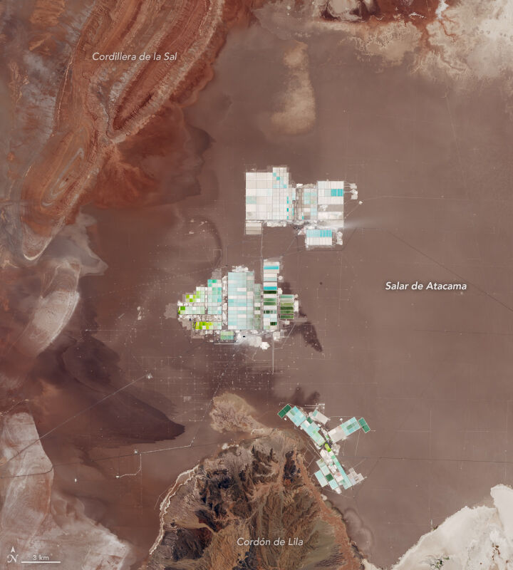

Codelco and SQM Budget $3bn to Take Direct Extraction Commercial in the Atacama
The state-backed venture files its environmental study and targets 280,000–300,000 tonnes of LCE a year from 2031 through 2060 — the biggest technology bet in brine history.

Chile's answer to the lithium race is now a number: $3bn. That is the budget Codelco and SQM have assigned to deploy direct lithium extraction (DLE) at their joint venture in the Salar de Atacama, the lowest-cost lithium brine operation on the planet.
The alliance — which hands state-owned Codelco majority control and secures SQM's Atacama operation through 2060 — filed its environmental impact study with Chilean regulators in June, the last major domestic permitting milestone before construction.
The numbers
The venture targets an additional 300,000 tonnes of lithium carbonate equivalent between 2025 and 2030, and then a steady 280,000 to 300,000 tonnes a year from 2031 through 2060. For scale: that sustained plateau alone is more than the entire world produced in 2015.
After years of pilots, the partners say the new extraction technologies — designed to recover more lithium from the same brine while returning water to the salar — are ready to go commercial. It is the largest single commitment to DLE anywhere, and its success or failure will echo across every brine project in the Triangle.
A state-led model, watched closely
Chilean production rose an estimated 10.1% to 64,100 tonnes in 2025 on SQM's ramp-up, and is forecast to grow a further 4.9% to 67,300 tonnes in 2026. The question the industry asks is longer-term: whether a state-majority structure can move at market speed. Argentina, running the opposite model a few hundred kilometres east, offers the control group.